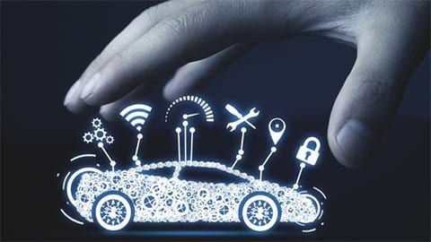

Ticketing System & Reservation
Our other flagship products and services include a ticket booking and sales system. Through this solution, we provide customers with an efficient and reliable booking experience. With modern technology, our ticket services offer convenience in trip planning and provide flexibility in purchasing tickets securely and comfortably.
Our Products & Services
-
 01Mobility Technology
01Mobility TechnologyDevelopment of ITS
With various technologies and knowledge we have accumulated, we plan, design, and develop transportation platforms. This aims to enhance the efficiency and stability of the transportation system by implementing advanced technologies such as electronics, information, and communication.
(Intelligent Transport System) -

Diverse and Creative Transportation and Communication Technologies
We possess world-class ICT technologies, including the Intelligent Transport System (ITS) that encompasses monitoring solutions for location, logistics, passengers, vehicles, and big data processing. -

Establishment and Operation of Platforms for Transportation, Logistics, and Passengers
We construct optimal platforms by combining years of accumulated environmental and traffic research data in Indonesia with the methods and techniques currently being developed and operated in Korea.